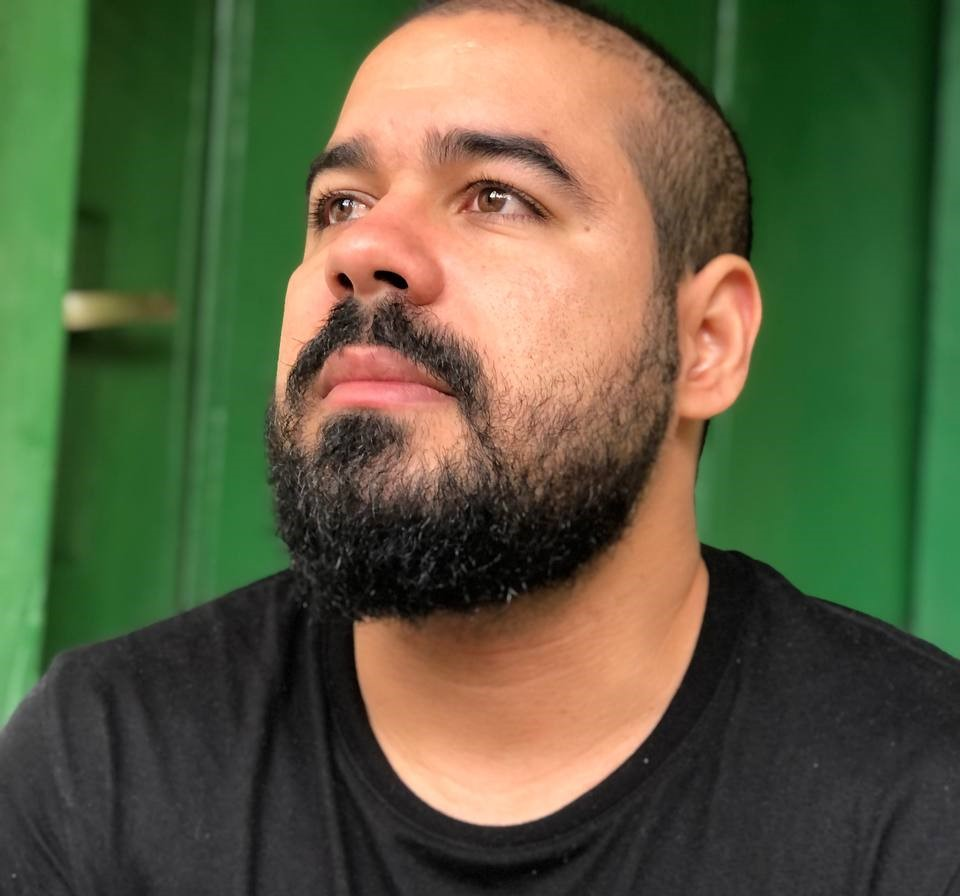

|
Who Am I? Education Experience Tecnologies Contact |
Who am I?

Gabriel AssunçãoDublin, Ireland Positive, engaged and an active doer with an analytical spirit. I am a hands-on person because I heartily believe that the example comes before the word. I'm a problem solver. Analise, identifying and correcting are daily basic activities of my personality. Versatility, team spirit and communication are my work tools. Furthermore, planning and organization are my keys to the sustainable development of any team project. I bring to any team a partnership in customer service; accurate communication skills; excellent operational organization skills; a mentality guided by continuous improvement; strong analysis skills; proactivity to solve problems. What are my values?Courage, determination, integrity, authenticity and spread a good energy. I trust my guts, and I back it up with data. EducationUniversidade Salvador - Logistics Degree, Logistics, Materials and Supply Chain Management Universidade Salvador - Master of Business Administration (MBA), Project Management ExperienceFedEx Logistics - Logistics Assistant: Support periodic inventory with SAP ERP; Maintain excel sheets with significant storage data volume daily; Improve and keep updated Key Performance Indicators; Strong use of Microsoft Excel and Microsoft PowerPoint; Report any operational problem directly to supervisor. Unilever Foods - Transportation Assistant: Support the Warehouse Supervisor on order fulfilment requirements with a route scheduling system and backhaul to create the most efficient daily delivery schedule; Transmitting the route schedule to the general manager; Assist the Transport and Warehouse teams in delivering network targets; Warehouse budget follow-on; Active participation in the monthly S&OP and Supply Review meetings to share the current status of the storage capacity plan and if any deviation risks; Warehouse inspection to guarantee a tidy environment. TecnologiesJavascript (06 months): Html (06 months): CSS (06 months): ContatoWhatsapp: +55 71 999816212 Instagram: instagram.com/_gabrielsantos.a/ E-mail: gabdevsantos@gmail.com |